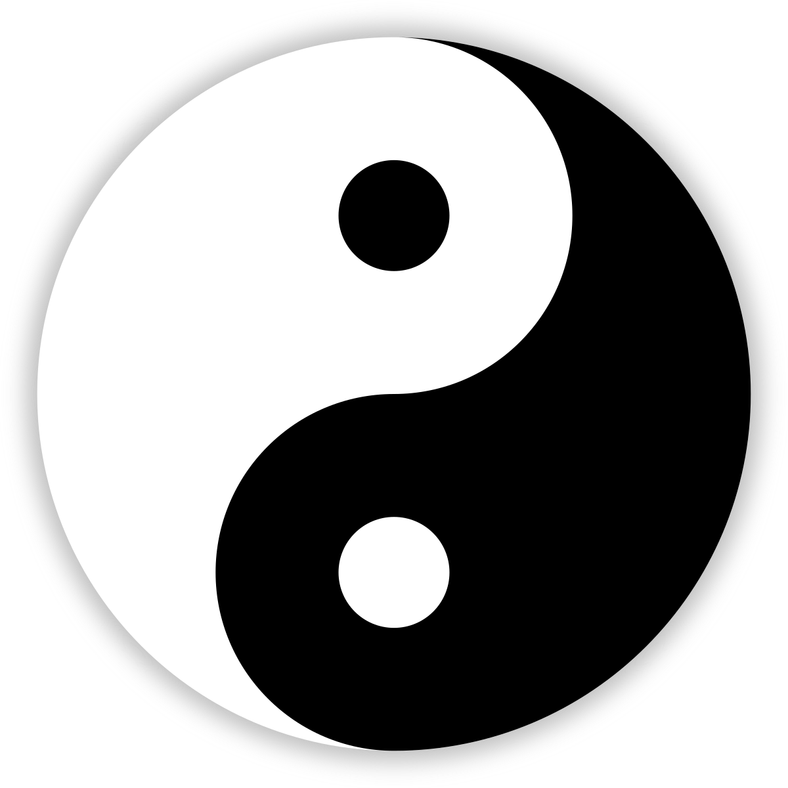

This is a collection of reflections stemming from two videos I watched today, which chronicle a karate expert's visit to a Shaolin temple (part 1, part 2).
I know next to nothing about Buddhism and kung fu, but still, some of Shi Yeng Hi's (the temple head) ideas were understandable and generalizeable.
Structure and foundation, physics, fluidity, circularity
At some point in the first video, we see a jarring difference in the horse stance between the karate style and the kung fu style. Jesse (the karate expert) demonstrates the horse stance as he knows it from karate, only to be effortlessly thrown off balance by a simple push. Shi Yeng Hi, on the other hand, demonstrates the kung fu version (known as "ma bu"), and cannot be pushed around.
Interestingly, the two stances look very similar from afar. One may wonder as to the constitution of kung fu's secret sauce here. The answer is simple: in Shi Yeng Hi's words, the kung fu version is "strongly rooted". It provides an optimal structure and foundation, resilient enough to prevent getting hopelessly tossed around. He explains briefly that "keeping the bones (structure) in place while relaxing the muscles around it" will lead to this state of resilience. The karate version is straight, strict, tense, jagged; imagine a shape, constituting of straight lines discontinuously arranged in perpendicular relationships, resulting in a "horse stance" shape. The kung fu version is more rounded, fluid, relaxed, perhaps even "graceful".
At first, it might seem paradoxical that the more fluid, relaxed stance ends up being the one far more resilient to external force. One might make the association of "solid" being far tighter, more compact, and rigid than mere "liquid". People are more afraid of a solid object being thrown at them than a bucket of water. However, this is the wrong analogy to make. There is little concept of "breaking a fluid". Imagine a long well; no matter how many times or how hard the water in well is punched, the water is never "broken". Contrast this with a solid, let's say a long block of wood. If the block of wood is stricken right in the middle, with an object sharp enough, it breaks, despite it's "sturdiness". In fact, it is this very compactness and rigidity of a solid that allows for a concept of "breaking apart".
We can make an analogy to classical mechanics. In the same section of the video, Shi Yeng Hi refers to punches in karate as being very directed, "straight line", as "having a clear beginning and end" (I'm paraphrasing so don't take these quotation marks literally) in terms of their transfer of power. This is the same concept of rigidity as the horse stance. Let's abstract the karate punch into some general object in a Cartesian plane, moving in some trajectory, perhaps accumulating a lot of force along the way. From a view of an object moving through time in a Cartesian plane, the object's trajectory is clearly predictable to the physicist tracing out its path. From a linear algebra perspective, this trajectory can be viewed as some function of time being traced out in the plane, and equivalently (due to its predictability) a vector in that plane (perhaps the function here is nonlinear as well, but in most cases, if we visualize a punch or any human motion, the trajectory is predictable as either a linear or quadratic function, continuous and low degree in either case, or as a discontinuous series of such linear/quadratic motions, as seen in a sequence of karate moves, which reduces to the same thing but in sub-actions separated by time; even if we have some weird function the same principle applies if we take the perspective of "manifold" or whatever nonlinear space version of a linear vector space). The vector in the plane is of a dimension lesser than the plane. Thus, any other actor residing in the same plane as the originator of the aforementioned action/object/vector has infinite leeway as to their response to it. The physicist can clearly see that, given a moving object equipped with some force, there exists a dynamic between the object and another object acting upon it; the impact of the first object on the second, and also of the second object on the first, can be traced out. If we were to try to stop the first object, to remove some of the magnitude of its force to the best of our capacity, we would hurl our own object towards it in the exact oppposite direction, such that both objects would collide; however, in the process of blunting some of the force of the first object, our own object was the recipient of its force. Perhaps the first object was stronger than any force we could have mustered. This is clearly not a great strategy in the context of a punch. However, the physicist, with the advantage of a perspective in his vector space, can evaluate his infinite options in the form of infinite directions to place his own object in interacting with the first. If he attacks from a perpendicular angle, the force of the attacking object was almost meaningless, and our own object manifests its full force with minimal repercussion, causing the atacking object to deviate from its initial trajectory as much as it possibly could. It gets even worse when we consider more complex, interacting objects, such as a human body, where the punch is only one part of a connected system. When someone throws a punch, their entire body is behind it, and the transfer of energy can be mapped out both not only in the arm, but also the legs, hips, chest, etc. The body twists and contorts in its movement, and this is especially true with high intensity "straight line" rigid movements such as the karate punch. The physicist rejoices, as they can now choose a well positioned vector of their own whose applied force will cascade, and whose ramifications can be far more potent than if the punching arm were the entire object. Taking the shape of the attacker into account, the defensive maneuvers, the physicist's vector, can be effortlessly positioned to take the attacker completely off balance. The same concept applies with rigid horse stances.
Rigid motions, such as the ones in karate, are not ideal in the eyes of kung fu. This is because they reduce equivalently to those moving objects that are easily and predictably subject to Newton's laws. The mechanics of solid objects are far more predictable, "well behaved", and easy to modulate and manipulate according to laws of physics than those of fluids. I've heard endless horror stories of "fluid mechanics" while the principles of classical mechanics are quite intuitive. The kung fu equivalents of moves in karate are clearly more fluid and relaxed. As such, they are more adaptable, as opposed to rigid motions enslaved to a fixed trajectory in a Cartesian plane, a relaxed motion or stance is immensely adaptable to an external force, as demonstrated by Shi Yeng Hi's horse stance, which was resilient to the same push that knocked over the karate practitioner. The kung fu style integrates a strong structure, an advantageous skeletal positioning, which allows for ease and efficacy of reaction, with the freedom afforded by relaxation of the muscles to adapt to the received attack vector, like a physicist calculating the cross product of a moving object. Yin (chaos, freedom, muscle relaxation) and yang (order, structure, firm skeleton).
Also worth noting is an insistence on "rounding". In contrast with karate "straight line" shapes, kung fu shapes, both for stance and movements, tend to have a circularity to them. As opposed to having any beginning and end, the kung fu punches and attacks are more circular in their chaining, allowing for efficient transfer of energy. A parallel to a "perpetual motion machine" comes to mind, or more generally, momentum. An object with an existing momentum requires less "work" or effort to be expended to achieve a high magnitude of force, whereas one discontinuously beginning and ending needs effort afforded by strength and stamina to get to the same place over and over again. "Recycling" can be visualized as a circle for a reason. If we are to think of physical shapes, the circle is perhaps the most sturdy, as it is rounded and uniform across all perspectives, there are no weak points from any of the infinite angles the physicist views it from. In real life, it allows once again for any degree of adaptability to an opponent's move. The rounded shape affords no advantage to the opponent; no matter where they attack from, the kung fu practitioner still has all their advantages in the same way.
This discussion can also pertain to the mental state, not just the physical. A mental state consisting of chains of expectations with desires and strong valuation attached to them can also be thought of as a rigid, "straight line" realization in the same sense as a punch in karate. Life can be chaotic, and at the very least is unpredictable and impossible to fully understand; in general, wrenches are eventually thrown in the face of expectations, ideals, and worldviews, and this holds more true the tighter and more specific these things are (just like a punch in karate with a very "specific" and predictable straight line trajectory). The more attachment and specificity to these things, the harder a chaotic angle caused by a twist in life can hit, and at the very least, rigid mental states are far more subject to getting tossed around by life and nature; and such mental states are (necessarily) always wrong and suboptimal, at the very least they are incompletely conceptualized, and the vast majority of the time they are extremely wrong to the point that life will certainly eat away at them. I would imagine that the Buddhist ideal of "desiring nothing" (apologies if I'm paraphrasing incorrectly, as I said I know very little about these things) would refer to defense against the chaos of life at its very limit. Just like a circle has no angle which is considered "exploitable" relative to the rest of the shape, there is no concept of getting "tossed around" by life, of the scarring experiences of dissatisfaction, misery, and negativity, if there is no such fodder ripe for exploitation. Without attachments of desires and expectations to a life trajectory, there is no dissonance when the infinite complexity of reality brings forward these inevitable wrenches which exert strong force against beliefs and strategies which are generally bound to be false or incomplete.
Game theory optimal
There is a concept of "exploitability" that has been discussed here. Indeed, it seems that a clear parallel can be drawn between the mode of life preached by Buddhism and kung fu, and a "game theory optimal" strategy. Note that I don't actually know much about game theory, so some of this could be misleading, but hopefully this isn't complete baloney.
A game theory optimal strategy is one that is not exploitable by other players in expectation. Most strategies in a game are exploitable, and people tend to play games using such "exploitable" strategies, though some are better than others. In fact, most (if not all) of the dynamic, exciting strategies involving some amount of risk, any strategy involving trying to predict or respond to the opponent's actions, thinking several steps ahead, or targeting specific objects, tend to be exploitable by some other possible strategy. On the other hand, game theory optimal strategies tend to stick very closely to the inherent probability distributions of the game itself, leading to unexploitability in the long run.
Kung fu is generally considered a "defensive" martial art but perhaps it would be more appropriate to describe it as "responsive". Karate is considered a more "offensive" martial art. The scenarios I have described involve deflections of attacks by a karate practitioner. Karate would not be considered "game theory optimal", despite its clear dynamism, passion, and sharp transfers of energy; similar to a bold game player. The attack can always be deflected by some perpendicular defense. An idealized kung fu would not have this problem; reducing without loss of generality to a 2 player game, a kung fu master would simply use laws of physics to deflect any attack by the opponent and execute some well placed strike; though they probably would not engage in a passionate flurry of punches, otherwise they themselves will have entered the realm of exploitability. Only one or a few quick, well placed strikes, executed while the opponent is off balance and cannot efficiently counterattack at all in that moment according to the laws of physics. Perhaps such motions can be chained (with that circular momentum) if the kung fu practitioner is good enough, such that the opponent can never recover according to the laws of physics (to make a math analogy, an action in a finite state machine is chosen such that the next state is also one in which the opponent is incapacitated by laws of physics working against them, and such that in this next state the kung fu practitioner is in a position to strike again; if such transition is always possible, such as if there is the possibility to cycle back and forth between certain types of states, then the process can go on ad infinum). That was a bit of a tangent, but the point is that kung fu is meant to stick to an "unexploitable", game theory optimal strategy. The initial strike can clearly always open an opening for counterattack, thus being an initial aggressor is never game theory optimal. If faced against a kung fu practitioner, a fighter might decide that he himself will wait, such that he is in a position to exploit any initial attack. If both men are patient enough, perhaps all the way till infinity, then they have stumbled upon a Nash equilibrium, a very boring one at that. But technically at this point both men are still adhering to valid kung fu.
This concept of game theory optimal functionining can probably be applied to the general Buddhist way of life, including the previous discussion of mental state. Lacking desire is game theory optimal, having them is clearly exploitable by some twist of life.
Yin and yang
This entire discussion can be viewed in terms of the related tenets of yin and yang. I might be getting the concept wrong (I did no background research, this is just unfettered stream of consciousnes thoughts to be honest) but yin would represent chaos and yang would signify order. The familiar taoist image of the white and black circle, in a perpetual cycle with itself, comes to mind.

Yin and yang, or order and chaos, are clearly entwined inextricably in the entire fabric of existence. Things come about through chaos, and maintain themselves through order.
In strategy, exploitable ones are rooted in both yin and yang at once. They entail a set of expectations and beliefs, for example, about the opponent's strategies and future actions or about the best pieces to hit in the moment. These expectations involve a belief in a world with high emphasis on "yang"; that these aspects of the game are predictable to the point that they can exploit them, that they fully know the right thing to do. Their strategy itself becomes heavily tailed towards yang; involving a tight attachment to these beliefs, not deviated from. And they expect the opponent to feel the whip of "yin"; hoping that their opponent would not expect such a plan. Indeed this situation is analogous to a zero sum game; if both players act according to some "yang" expectation, then the one who is subject to "yin" will lose, and the one who reflected a true "yang" prediction will win. Attributing yang to beliefs and predictions like this might be a mistake. In fact, intrinsically, such games can never be fully predictable; without full knowledge or observation of all aspects of the game, there is an aspect of chance and of hope that is not grounded in certainty. Perhaps we face an opponent whose prediction trounces ours; we can intrinsically never predict or be prepared for this. Playing in such a fashion is like playing lottery according to some never fully known distribution of strategies. The concept of removing expectation from things would mitigate the fallacy of hoping for our generally misguided beliefs to reflect yang alone.
The kung fu practitioner would integrate yin and yang together in a fight. In order to be unexploitable, the kung fu practitioner cannot attach himself to a prediction of the opponent's initial strike, because if the opponent strikes elsewhere instead, the kung fu practitioner is caught off guard due to the suboptimal preemption. The kung fu practitioner therefore embraces the nature of yin; expecting nothing. Yang is necessarily caught up equivalently; expecting nothing allows the kung fu practitioner to be infinitely flexible and adaptive, patiently observing the state of the attack, and place his defense in accordance with the corresponding good response according to laws of physics. Embracing yin allows the practitioner to efficiently manifest yang; expecting yin reduces yin.
In the taoist diagram, the yin and yang are circular and cyclical, and further, both yin and yang surround a dot composed of the opposite color. There is an emphasis of the entwinement of these concepts. Indeed, yin alone and yang alone are nonexistent and not even understandable. A world consisting of yin alone can be characterized as "pure chaos". What happens at any point in time cannot be correlated with the next point in time. Any conception or conjectures about reality can never be proven, disproven, or have any probability or weight to them at all. The world exists in a state of pure uncertainty; an infinitely wide uniform distribution across all timescales, involving infinite objects in the sample space. In fact, we could never know the nature of such objects, as having any conception of these would involve yang. On top of that, having any concept of time at all would be a fallacy, in the realm of yang we could make no valid conceptions of anything. The world of pure yin is unfathomable. The world of pure yang is not much better. In a world of pure order, nothing can be uncertain, unknown, out of reach, or beyond the extent of our power. Generally, nothing could change, unless we always knew what change would occur, and could predict this across all timescales. We ourselves would have to be infinitely powerful, and infinitely knowledgeable, about everything past, present and future. Even though this situation would position us as a divine deity, this is the most boring world imaginable. It is also unfathomable; we would have to know the origin of our own creation, understand our own inner workings, predict our own actions, and predict our own predictions ad infinum. This does not fit in the framework of our reality. In the world of pure yang, nothing can be created, everything must stay the same; pure yang would entail an eternal void. Pure yin and pure yang are detached from our reality, and are thus useless and absurd conceptualizations; yin and yang are always manifesting in everything we experience. This is probably the meaning of each color enveloping a circle of the opposite color: yang modulates yin, and vice versa. When we explore or navigate (yin), what we look for, and how we look for it, is rendered meaningful or effective by some base principles (circle of yang). When sticking to specific principles or following some order or way of life (yang), these principles are developed from observations, experiences, explorations, flights of thought (circle of yin). Notice that this creates a cycle (almost analogous to gradient descent in machine learning).
The concepts of Buddhism aim to strike an "ideal" balance and appreciation of yin and yang. This way of life would probably entail an endless cycle of "responding". An event is sampled from the ever elusive probability distribution of life (yin), and the Buddhist responds to it according to some "rules" or "principles" (yang). In kung fu, such principles come from incessant drilling, to the point where they can be effectively executed on the drop of a hat; and Buddhism itself would probably involve some key tenets (axioms) embedded in any response, never to be deviated from. It is a relatively "passive" existence.
Inertia
It would seem that any real strategy, or way of life, involving some sort of outward action or routine, necessarily involves some destination, and thus involves desire. This seems to contradict the ideal of "no desire". In fact, coming up with any such "way of life" entails expectation and beliefs about reality and concepts of "good life", contradicting the ideal of "no expectation". (Perhaps this is where I'm misunderstanding Buddhism. Recall I did no background research for this at all, so I'm probably wrong, but this is just random thoughts right now.)
The only way to get around such contradictions is to converge to a "life" of nothing at all. A way of no way. Perhaps tantamount to living in accordance to pure yang, or pure yin, or neither; just getting tossed around by life, but not caring, or attributing any meaning to it whatsoever. I've heard the term "transcendence" before, it probably refers to the (hopefully temporary) void experience. Indeed the concept of meditation, of stillness and unaffectedness, is an approximation to this.
But disregarding this, perhaps we can grant a bit of clemency to this concept of "no desire", and bound it a bit rather than forcing it to coverge to 0. I started reading on classical mechanics very recently, and that will once again provide some thought scaffolding here. It seems, in practice, that most Buddhists aim for a life through an "inertial frame". An inertial frame is an unmoving point of reference. When force is applied to an object, it starts to exhibit acceleration; when in a state of acceleration, the object cannot be in an inertial frame. To remain in an inertial frame, a practitioner must avoid "being accelerated" through force. Indeed, any outside experience should not affect the internal state of the practitioner; this is probably why the monks have a dispassionate disposition. This way, the world is viewed through a lens such that no force can be received, avoiding acceleration. Passion and emotional attachment are the conduits for such force, leading to accelerations, deviations, instability, and perhaps most disturbingly, lack of control; the motion in the Cartesian plane is dictated at a whim by whatever the universe unpredictably throws at any given moment. In a slightly jarring paradox, the Buddhist way solves but also worsens the problem of free will; detachment provides deep roots and foundation against the force of life, preventing unwanted and uncontrollable deviations; however, to achieve this end, the Buddhist ways clearly entail a strict tightening of behaviors and an intense discipline, which is clearly also against the spirit of "free will".
Optimality
(I will emphasize once again that I know little about Buddhism, and that some of my claims about it could be off. The vast majority of this is my own deduction, anyway, necessarily subject to error. So take the criticism below under that consideration.)
Buddhism presents these tenets of detachment with an attractive frame (note that this is almost a contradiction in itself). But, thinking outside this for a bit, why should this be this an attractive frame? The Buddhist way would be attractive only if it were optimal, meaning there is no "better" alternate way.
Now we get into a philosophical problem as to the meaning of "better", and at this point we will be necessarily grasping at straws, because such "rational" arguments depend on alignment on almost arbitrary definitions and axioms. However, one relevant consideration that doesn't necessitate axioms is that "better" has a personal aspect; any individual has some ideal of a "way", and Buddhism can be a potential candidate for that. Perhaps it is best to treat the concept of "better" as the black box that it is, and consider it merely through the lens of some individual's (not fully explicable) desire to become a practitioner of some way, as opposed to any other alternative.
For one, it seems paradoxical and contradictory to "want to be a Buddhist". To desire to have no desire... clearly if someone is attracted to Buddhism, the draw is evidently more psychological than logical. Perhaps for the yet uninitiated individual, the attractive aspects of Buddhism stem from qualities of the end goal itself: to be resilient in the face of chaos, immense inner strength, freedom from "mental" pain. These are definitely attractive qualities in themselves, but one must wonder whether their manifestation according to the Buddhist ideal fits with the individual's concept of these things. In the end, the Buddhist way of life is boring. Not to the Buddhist (who succumbs to no such negative notions), but to the uninitiated individual, if they were to gaze, detached, at a Buddhist monk for a week, let alone a month, the boredom would be unbearable. The individual, at this early point, has the state of mind that Buddhism tries to efface in the end; but from this point of view, Buddhism would be an immensely unattractive ideal to live by. There is no excitement, no passion, no dynamism, no surprise. Notice that these are all elements that Buddhism was developed to counter, yet most people live intimately tied and craving for such things. Buddhism teaches that such things are not ideal. But this loops back to the original question: who is to say that lack of passion is better than passion?
Bringing this back to game theory, perhaps someone reads an article on Wikipedia about a Nash equilibrium strategy for poker. They see that this strategy, in the long run, is the most unexploitable possible. In the long run, there can be no utility against such a strategy. Beaming with joy at this newfound knowledge, the player excitedly puts the strategy to the practice. And plays it over and over again. The player could have never predicted from the Wikipedia article that this game theory optimal strategy is immensely boring in practice. It brings no excitement to anyone. The player's heart never has a chance to flutter due to bravery, boldness, or anticipation in trying to predict an opponent. One must ask themselves: why play poker? What is the point of playing poker? Money? Amusement? Something else? Perhps there is no good answer to this question, but at least when it comes to money or entertainment, the game theory optimal strategist is suboptimal in both metrics. Amusement is obviously missing; but even when it comes to money, the game theory optimal strategist notices that although they aren't being exploited, and that their pile of chips isn't diminishing in the long run (or increasing, for that matter), another player at the table is racking up far more chips than him. His strategy is very exploitable, and bold, and risky. But it works, because this player's strategy was tuned to trounce the other predictable and exploitable players at the table, while ignoring our game theory optimal strategist. Indeed, "game theory optimal" is nowhere near as attractive in a more complex setting, in this case involving multiple agents, who can still interact with each other. Professional poker players, the "best in the world", do not play "game theory optimal". Phil Ivey makes a whole lot of money, probably has fun while he does it, while maintaining an aggressive style of play that is very far removed from any sort of Nash equilibrium.
Life is similar. From the perspective of a Buddhist mind, perhaps the passionate folk are fools, subject to whims, sways, exploitations, and limitless irrationalities, negativity, and disappointments. They are perfectly fine meditating for hours. But for someone who is not a Buddhist yet, would they want to be just "fine"? Although passion is open to exploitation, it can lead to joy, life's generalization of a mountain of chips. The Buddhist does not care about such a concept, but I do. Why change what I care about? What if negativity is what makes positivity and joy meaningful? Perhaps disappointment and insecurity are what drive towards to success and satisfaction. Evil and mass indifference are what make goodness and righteousness meaningful.
We do not have the answers to existence, and we can never get them. Such an endeavor is rendered futile and meaningless by virtue of the fact that it is dependent on almost arbitrary axioms, definitions, and particular lenses that come before the logic. Then it is reductive and assumptive, in my opinion, to say that eliminating passion is always better.
We must also realize that the limit of Buddhism is relatively unnatural. Desire is an innate animal drive, that has evolved in us over the eons (perhaps this is why desirelessness is referred to as "transcendence", transcending the "box" of nature). This trait is beneficial for "evolutionary success" and also individual success for obvious reasons. But, even from a human perspective, without such desire, where would we be? If we had some community of early humans, and it crossed their minds to engage in Buddhist practices, the human race would not have survived. Buddhism is a relatively recent school in the grand scheme of human history; if not for the explorations, active innovations, bold acts of bravery, and ambitions of tribes way back in the day, all of which stem from some sort of intense desire, humans would have quickly fallen prey to the stronger animals of the jungle, and the unflinching brutality of natural conditions. The school of Buddhism never would have arisen if not for the other way of life.
Relevant links
Shi Yeng Hi's YouTube channel